Research Interests
Gamma-Ray Bursts
Afterglow emission as a route to the underlying physics — the jet’s angular structure, the shock that produces the light, and the environment the burst went off in.
Multi-Messenger & Transients
Rapid optical follow-up of gravitational-wave events, kilonovae and other fast transients, combining a low-resolution spectrum at each epoch with a densely sampled light curve.
Instrumentation
Building the instruments and the software around them. I developed a fully automated follow-up system that connects alert handling, robotic observation and a fast transient search pipeline end to end, and I am interested in instrument development more broadly, including a near-infrared adaptive optics design.
How I got here
The universe is an unsolved puzzle. Observations give us the pieces, and physical interpretation is how we fit them together. The catch is that which pieces you get depends on how you look — some exist only at particular wavelengths, and a picture assembled from one band can be read in several ways. Put pieces from many wavelengths side by side and the picture sharpens. That is why I want to be an astronomer who works across wavelengths.
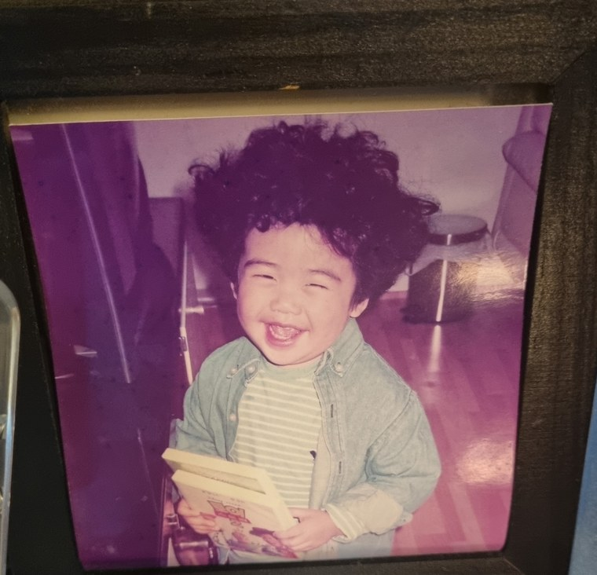
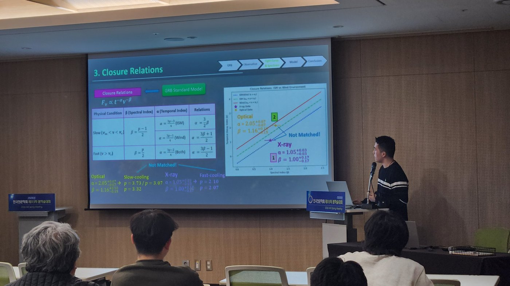
Presenting GRB 251013C at the KAS Spring Meeting, 2026.What I'm Working On
My main thread is the afterglow of GRB 251013C. 7DT caught it about six hours after the burst and recorded a medium-band optical SED during an unusual rebrightening. Combining it with light curves from collaborating facilities, I am working out what produced that rebrightening — currently testing whether an additional flare component can explain it. A paper led by Dr. Donggeun Tak is in preparation.
Alongside it I run the observing side. On RASA36 I built an automated target-of-opportunity system that starts observing within 30 seconds of an alert and completes reduction and transient search in about 40 minutes, paired with 7DT so that one alert can yield both an early light curve and a medium-band SED. With 7DT I led the follow-up and GCN reports of two afterglow detections, GRB 251013C and GRB 260223A.
The lesson so far: describing a light curve with a function and identifying the mechanism that produced it are different problems. The second needs more theory and sharper quantitative tools than I have yet — which is what I want a PhD to build.
Projects
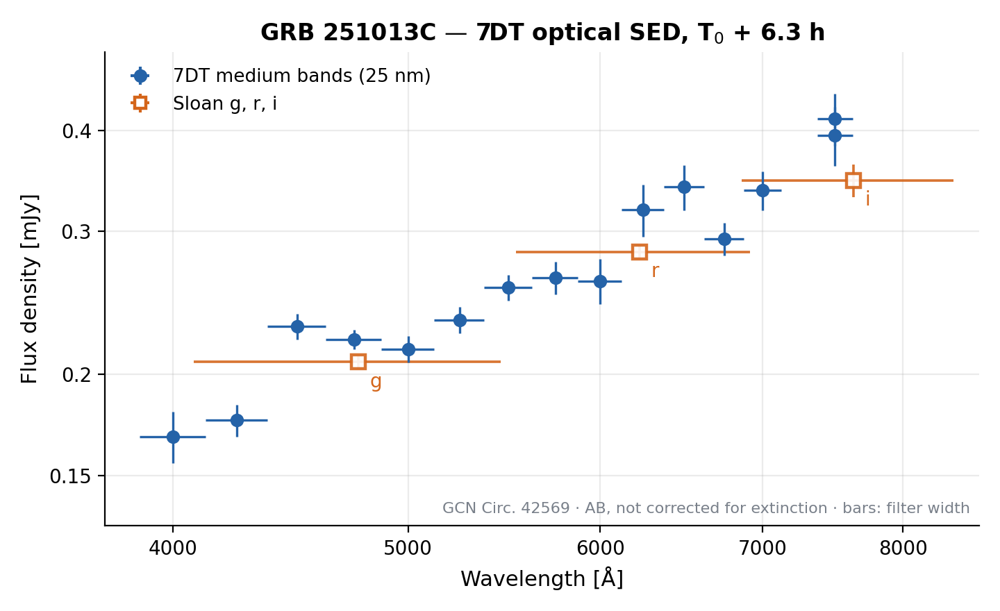
The Rebrightening of GRB 251013C
7DT caught the afterglow about six hours after the burst and recorded a medium-band optical SED during an unusual rebrightening. Together with light curves from collaborating facilities, I am working out what produced it — currently testing whether an additional flare component can explain it.
GRB 251013C did something afterglows are not supposed to do: partway through its decline it brightened again. 7DT observed it about six hours after the burst, and that single epoch happens to fall during the rebrightening — so it captures the optical spectrum at exactly the moment the standard picture stops working.
Combining the 7DT medium-band SED with light curves from collaborating facilities, I am testing what physical process could produce the rebrightening, with an additional flare component currently the main candidate. The results will appear in a paper led by Dr. Donggeun Tak, Medium-band observations of GRB 251013C with the 7-Dimensional Telescope (in preparation).
Results are preliminary; the analysis is ongoing.
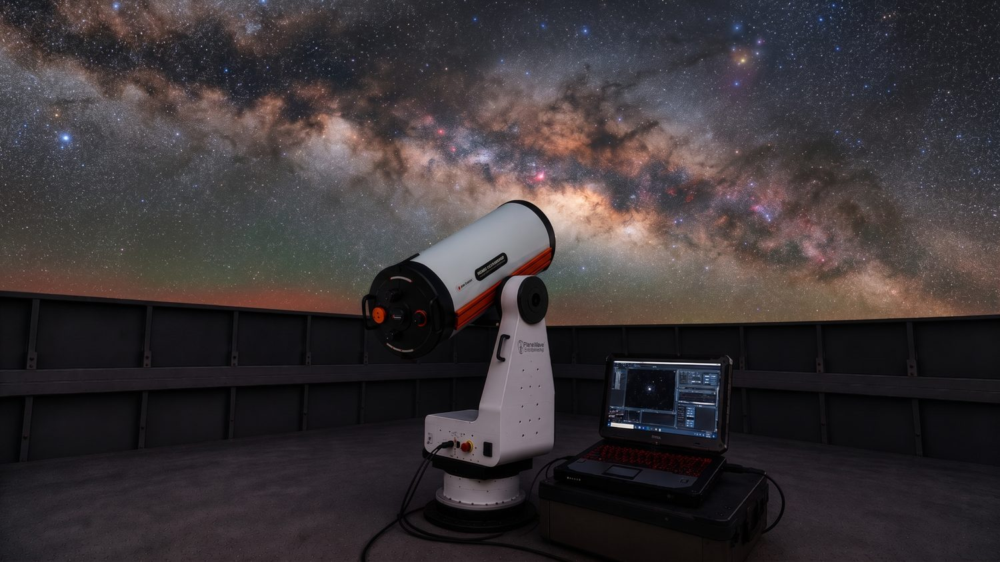
Automated ToO Follow-up on RASA36
A fully automated target-of-opportunity system built on TCSpy and gpPy: observing starts within 30 seconds of an alert, and reduction and transient search finish in about 40 minutes. Operational, with a GRB and two Einstein Probe transients already followed up.
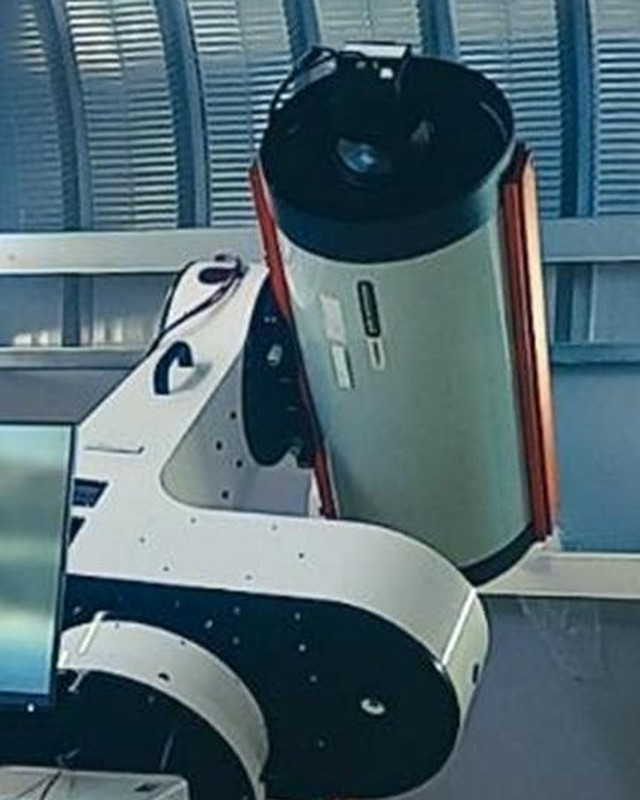
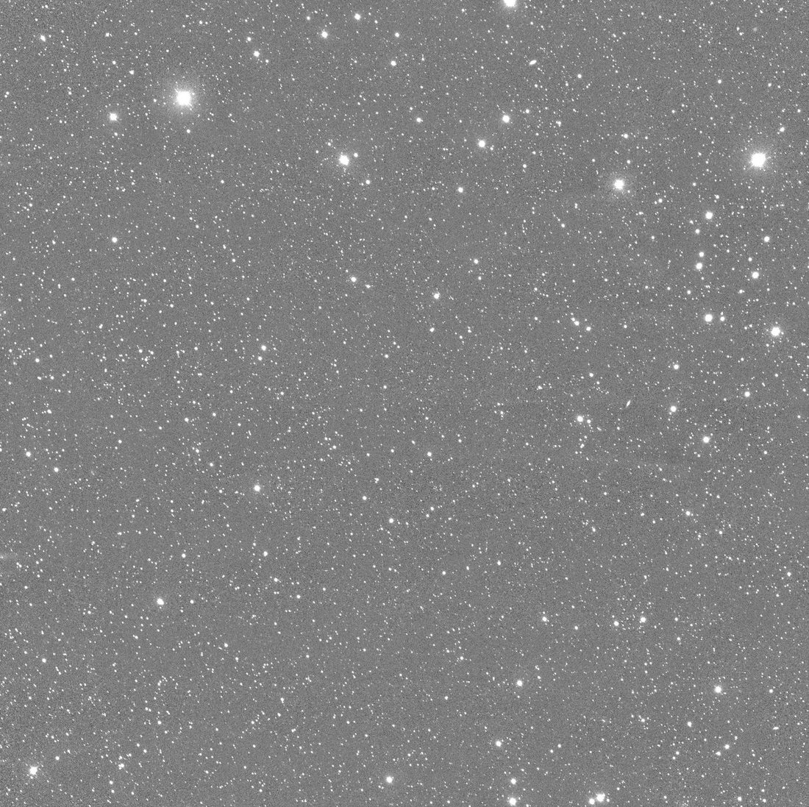
GRB afterglows fade fast, and early localizations can be large — so the first minutes matter and a wide field helps. RASA36, with a 2.67° × 2.67° field of view, suits both. I adapted the TCSpy observing system and the gpPy pipeline to it and connected everything in between: parsing GCN notices, selecting observable targets, submitting the request, tiling the error region, reducing the data and searching for transient candidates.
Observations start within 30 seconds of an alert, and the whole chain from request to transient search completes in about 40 minutes, with every step reported to Slack so a failure can be caught immediately. Paired with 7DT, a single alert can yield both an early light curve and a medium-band SED. So far it has followed up one GRB and two Einstein Probe transients, each yielding upper limits.
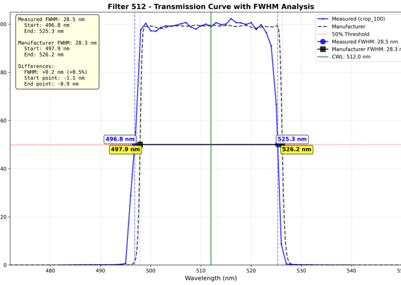
7DT Medium-Band Filter Characterization
Laboratory measurement and validation of 15 new medium-band filters, setting the photometric calibration that every 7DT science result rests on.
Every magnitude 7DT produces depends on knowing what its filters actually transmit. I built the measurement procedure for 15 new medium-band filters and validated each measured curve against the manufacturer specification.
Central wavelengths and bandwidths agree closely — for the 512 nm filter, a measured FWHM of 28.5 nm against a specified 28.3 nm, with both band edges reproduced to within about a nanometre. That is the level of agreement the medium-band SED work downstream relies on.
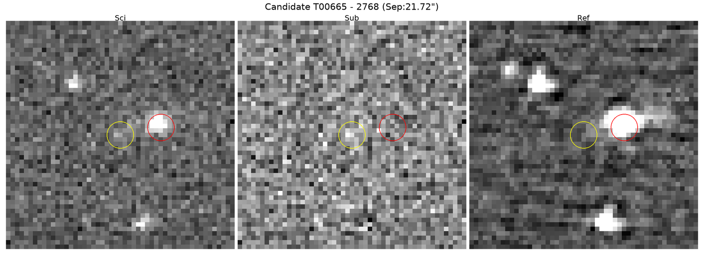
GECKO Gravitational-Wave Follow-up
For the neutron star–black hole merger candidate S230518h, I narrowed about 30,000 RASA36 detections to 1,447 host-matched candidates and then four by eye. No kilonova emerged, but the search did surface AGN variability and candidates absent from TNS.
GECKO followed up S230518h, a neutron star–black hole merger candidate, across most of its localization region. My part was the candidate search in the RASA36 data: about 30,000 detections that passed the first pipeline filters, cross-matched against candidate host galaxies to leave 1,447, then inspected one by one to leave four worth a closer look.
No kilonova turned up. The search did surface AGN variability and a few candidates that appear in neither TNS nor existing catalogues — but RASA36's large pixels and the lack of follow-up data meant none could be identified. It is where I learned that finding a transient and working out what it is are two different problems.
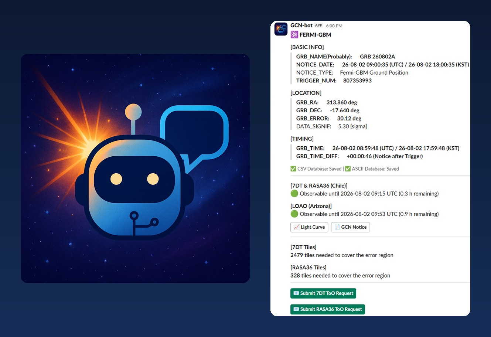
GCN Alert Bot
A real-time listener on the GCN Kafka stream. It parses notices and circulars from Swift, Fermi, Einstein Probe and IceCube, deduplicates repeat triggers, checks whether the target is observable from each site, posts a summary to Slack, and submits Target-of-Opportunity requests automatically.
A real-time listener on the GCN Kafka stream. It parses notices and circulars from Swift, Fermi, Einstein Probe and IceCube, deduplicates repeat triggers from the same event, works out whether the target is observable from each site, and posts the result to Slack with a visibility plot and the number of tiles needed to cover the error region.
It then submits the Target-of-Opportunity request to the telescopes automatically, and the same request can be sent by hand from the Slack message. The aim throughout is to collapse the time between an alert arriving and a telescope acting on it.
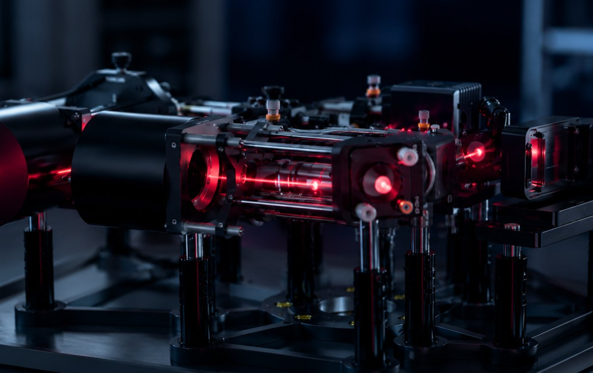
Near-Infrared Adaptive Optics Design
A graduate-course team project to design a near-infrared adaptive optics system: Zemax optical design, CAD drawings and a technical manual. The design was delivered to the optical communications company Spacebeam.
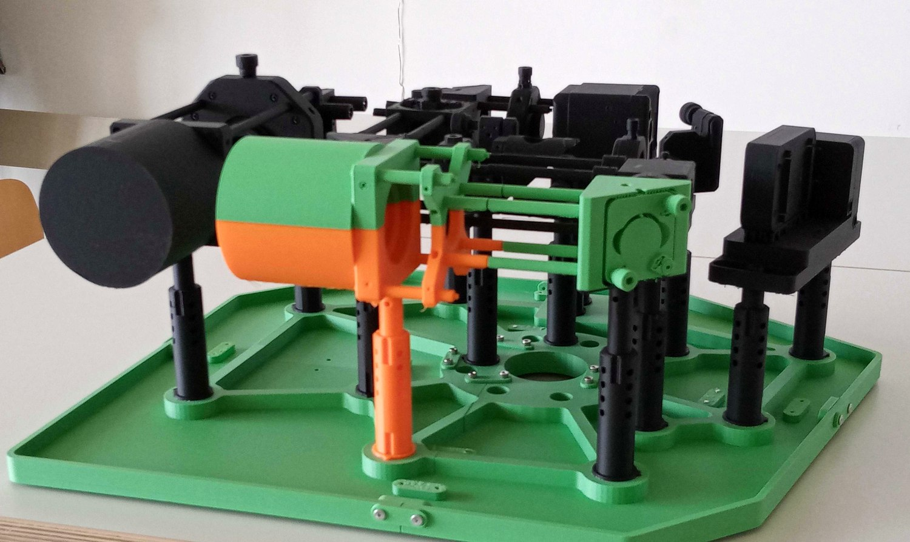
A graduate-course team project to design a near-infrared adaptive optics system. We produced the optical design in Zemax, the opto-mechanical CAD drawings, and a technical manual, and delivered the design to Spacebeam, a company building optical ground stations for satellite laser communication.
The first image is the bench as Spacebeam presents it; the second is our 3D-printed scale mock-up of the same layout.
Facilities
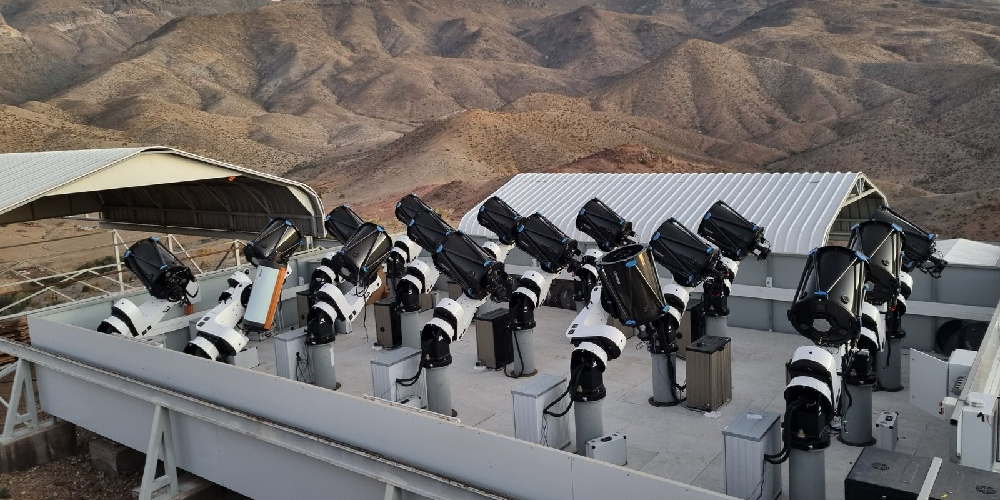
7DT — 7-Dimensional Telescope
El Sauce Observatory, ChileAn array of 50 cm astrographs, each with its own camera and filter wheel, built and operated by my group, the Center for the Gravitational-wave Universe at SNU. Pointed at one field with a different medium band per unit, it returns low-resolution spectroscopy (R ≈ 30–70) over 1.25 deg² in a single visit — which is what lets you follow a transient's spectral shape while it is still fading. I use those data as medium-band SEDs.
RASA36
Observatorio El Sauce, ChileA 0.36 m Rowe–Ackermann Schmidt camera. It has a wide field of view, and it can be repointed quickly; transient follow-up needs both, and RASA36 is useful precisely because it combines them. It sits at the fast end of the group's chain, KMTNet → 7DT → RASA36.
Publications
-
GECKO Follow-up Observation of the Binary Neutron Star–Black Hole Merger Candidate S230518h
G. S. H. Paek, M. Im, M. Jeong, S.-W. Chang, M. M. Hur, Y.P. Hong,
S. Kim, J. Lee, D. Lee, S.-H. Lee
The Astrophysical Journal, 981, 38 (2025)
-
Medium-band observations of GRB 251013C with the 7-Dimensional Telescope
D. Tak, Y.P. Hong, M. Im, Z. Maksut, J. H. Kim, S.-W. Chang, G. S. H. Paek, H. Choi, D. Hyun
In preparation
-
GRB 260223A: 7DT detection and Medium-band SED of Afterglow
Y.P. Hong, M. Im, D. Tak, H. Choi, D. Hyun, G. S. H. Paek, S.-W. Chang, J. H. Kim, W.-H. Lee
GCN Circular 43863 (2026) · first author · detection 33 minutes after trigger -
GRB 251230A: 7DT optical upper limits
D. Tak, M. Im, Y.P. Hong, H. Choi, D. Hyun, G. S. H. Paek, S.-W. Chang, J. H. Kim
GCN Circular 43270 (2025) -
GRB 251221A: 7DT optical upper limits
D. Tak, M. Im, Y.P. Hong, H. Choi, D. Hyun, G. S. H. Paek, S.-W. Chang, J. H. Kim
GCN Circular 43206 (2025) -
GRB 251013C: 7DT detection and Medium-band SED of Afterglow
Y.P. Hong, D. Tak, M. Im, H. Choi, S.-W. Chang, J. H. Kim
GCN Circular 42569 (2025) · first author · 14 medium bands plus gri, 6 hours after the burst
Presentations
-
Multi-band Optical SED Analysis of GRB 251013C Afterglow with the 7-Dimensional Telescope
Y.P. Hong, D. Tak, M. Im, J. H. Kim, S.-W. Chang, G. S. H. Paek,
H. Choi, D. Hyun, W.-H. Lee
Talk · KAS Spring Meeting, Suwon, Korea — April 2026 The multi-band optical SED that 7DT recorded for the GRB 251013C afterglow, and why this burst does not fit the standard afterglow picture. -
Automated Wide-Field Rapid Follow-up System for Transient Events with TCSpy & gpPy
Y.P. Hong, M. Im, H. Choi, S. Kim, G. S. H. Paek
Talk · KAS Fall Meeting, Gwacheon, Korea — 2026 The same system presented to the Korean Astronomical Society, with its first operational follow-ups. -
Automated Wide-Field Rapid Follow-up System for Transient Events with TCSpy & gpPy
Y.P. Hong, M. Im, H. Choi, S. Kim, G. S. H. Paek
Talk · IASS, Yeosu, Korea — July 2026 An observing system that runs from alert handling through robotic observation to a transient search pipeline without a human in the loop — observing within 30 seconds of an alert, candidates back in about 40 minutes. -
Filter Transmittance Characterization for 15 New Medium-Band Filters of the 7-Dimensional Telescope
Y.P. Hong, M. Im, H. Moon, J. H. Kim, C. Choi
Poster · IASS, Osong, Korea — 2025 Measuring what the new 7DT medium bands actually transmit, and checking it against what the manufacturer said they would. - Performance and Application of the Radio Telescope in Gwacheon National Science Museum J. Cho et al., incl. Y.P. Hong · IAU General Assembly, Busan, Korea — 2022
Education
Schools, Workshops & Awards
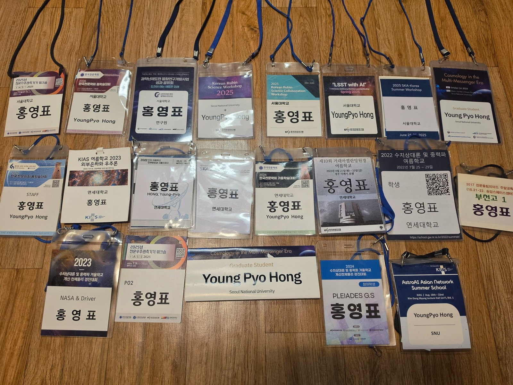
Every badge here is a school, workshop or meeting I have attended — from an Astronomy Olympiad weekend in high school to this year's conferences. They gave me much of what I know outside my own projects, and introduced me to people I still trade ideas with.
Looking up
Astrophotography
The same sky, without a proposal attached. Mostly wide-field Milky Way frames taken on trips — one of them on a phone, which says more about how dark the site was than about the camera.
Building things
Computers & Electronics
Electronics are the actual hobby; the PC is only where it shows most. I build my own — the one I work on now runs nested sampling and Overwatch with roughly equal enthusiasm.
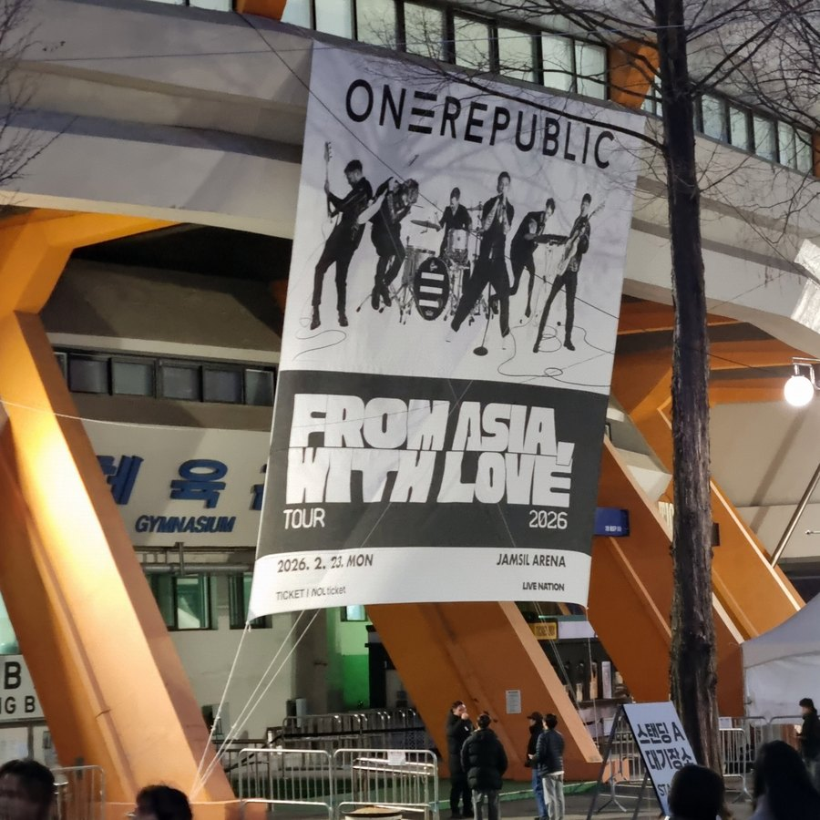
OneRepublic — Jamsil Arena, Seoul, 2026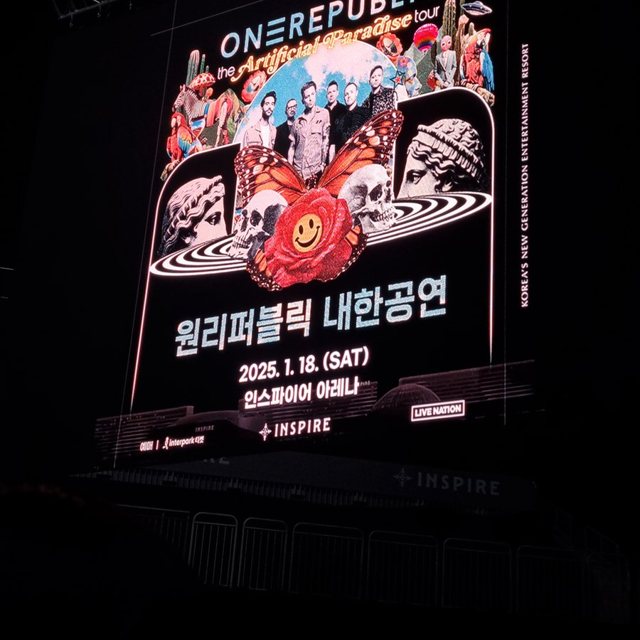
OneRepublic — Inspire Arena, 2025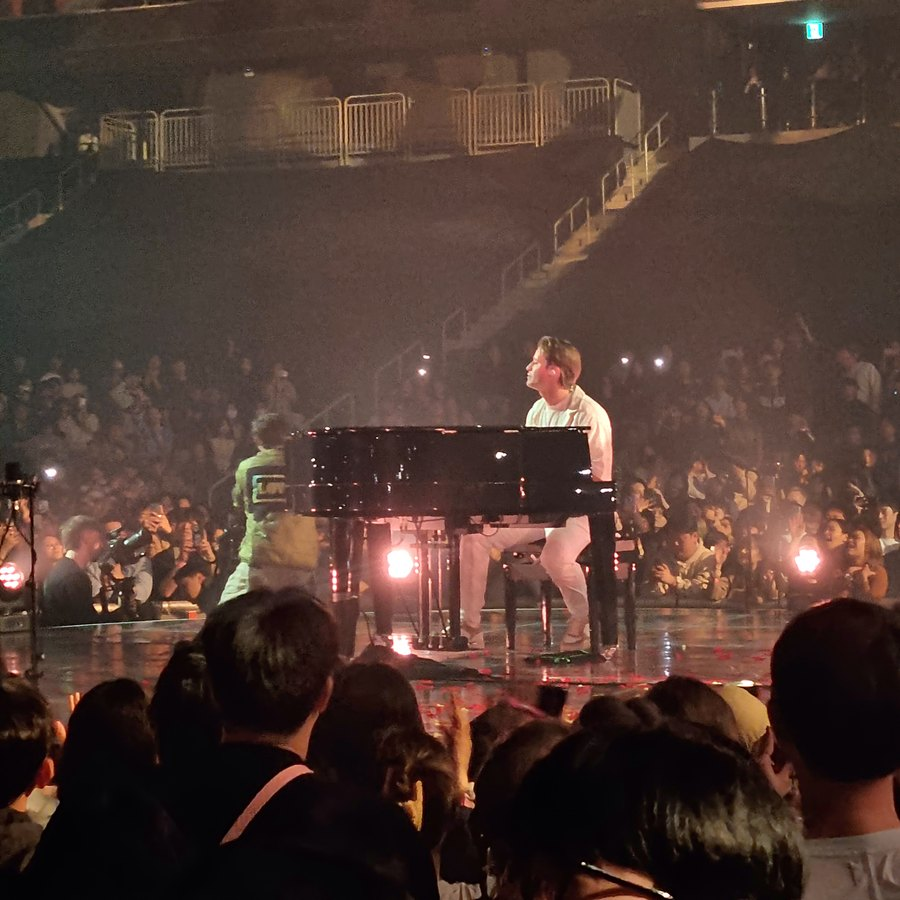
Kygo — Seoul, 2025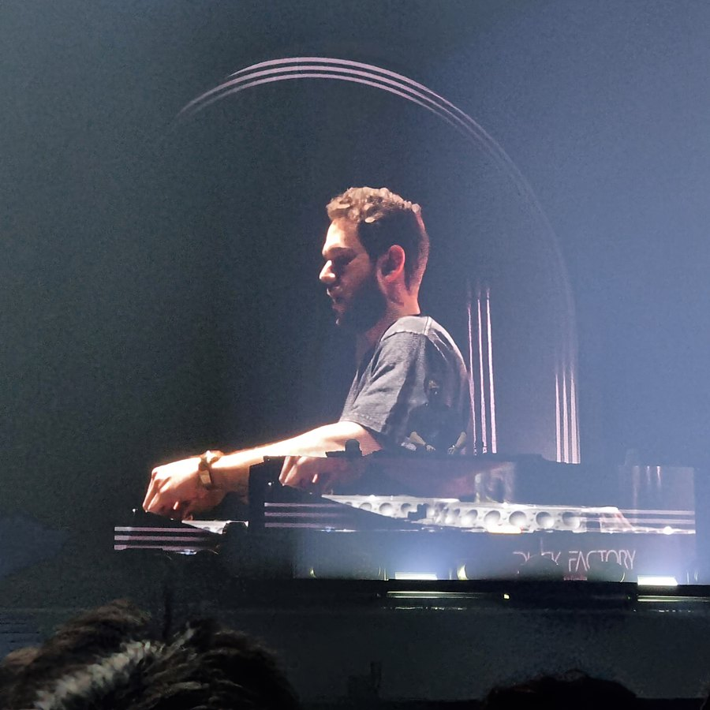
Zedd — Seoul, 2025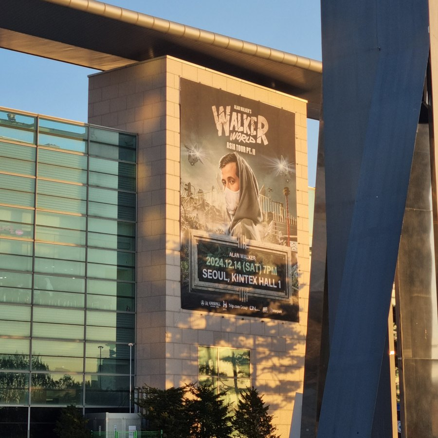
Alan Walker — KINTEX, Seoul, 2024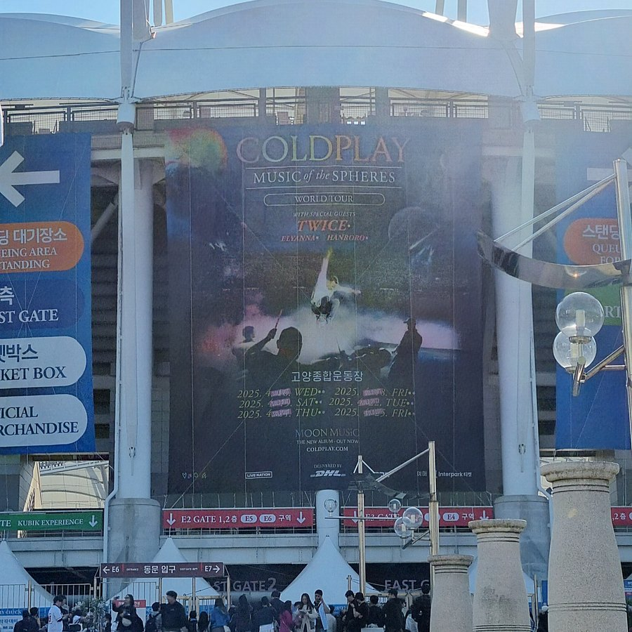
Coldplay — Goyang Stadium, 2025Listening
Music & Live Shows
Mostly EDM and pop, and I would rather hear it in a crowd than through headphones. OneRepublic twice, Coldplay, Kygo, Zedd, Alan Walker — six nights I would happily do again.


Playing
Games
StarCraft II, Overwatch and Diablo are the regulars, with the occasional Steam game in between. StarCraft above all — I have been a devoted fan of the series since I was a child, probably for the same reason I ended up in astronomy: it is set in space.


Outside the field
Society & Leadership
In 2024 I joined the sixth cohort of the Dosan Academy Aegiaeta Leadership Program — ten weeks of lectures from leading figures across many fields, built around Ahn Changho's ideals of honesty, integration and service, as one of a few university students in a cohort of working professionals.
Earlier, in 2022, I was part of the sixth cohort of the Youth Politics Academy, a non-partisan civic-education program for young people run by the nonprofit Chungjung. Over 24 weekly evening sessions, professors, editorial writers and lawmakers from several parties covered everything from liberalism and republicanism to inter-Korean relations, pension reform, and politics and big data. The course also trained us in practice, through debate battles and a mock National Assembly audit.
Contact
hongyp007@snu.ac.kr
evan77333@gmail.com
Questions and collaboration are always welcome — please get in touch.
Office
Room 102, Astronomy & Space Science Center (Bldg. 45)
Department of Physics & Astronomy
Seoul National University
1 Gwanak-ro, Gwanak-gu
Seoul 08826, Republic of Korea